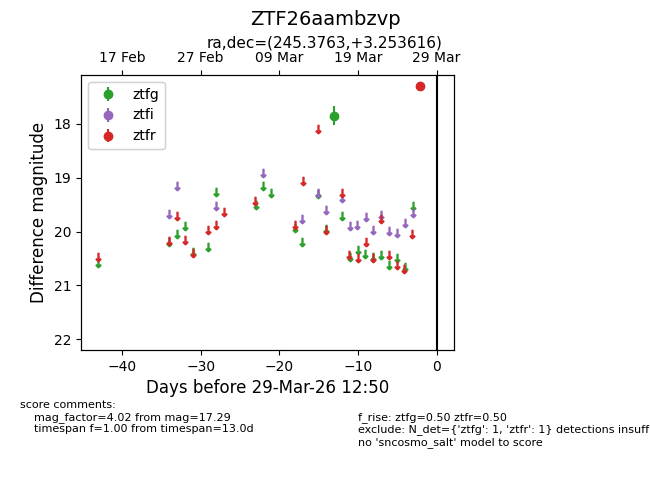
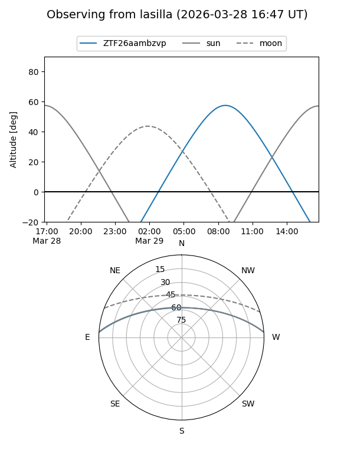
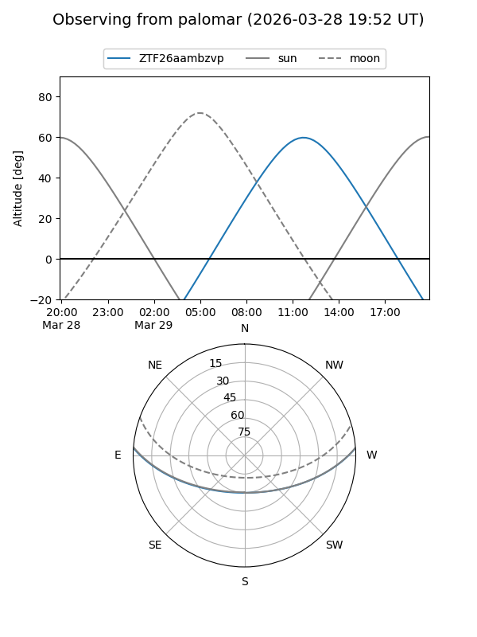

ZTF26aambzvp
Target ZTF26aambzvp at 2026-03-29 12:53
Aliases and brokers:
FINK: link
Lasair: link
ALeRCE: link
alt names
ZTF26aambzvp (ztf,fink_ztf)
Coordinates:
equatorial (ra, dec) = 245.3763,+3.25362
equatorial (HMS+DMS) = 16:21:30.32,+03:15:13.02
galactic (l, b) = (16.9757,+34.51275)
Flags:
Photometry:
last ztfg=17.85, ztfr=17.29
1 ztfg, 1 ztfr detections
Lightcurve

Visibility


Additional plots